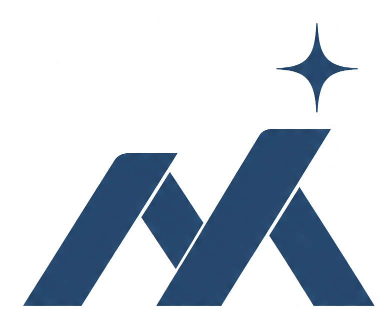
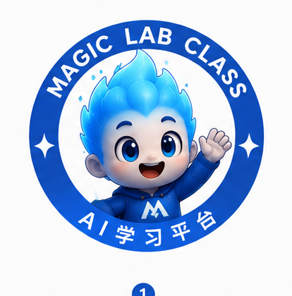

✦
✦
✦
Magic Lab Class
✦
会员体系说明 · 2026
澳新华人的
AI 商业增长生态
面向澳大利亚与新西兰华人的 AI 学习、实践、合作与商业增长生态圈 ——
从学习 AI 开始，把 AI 真正应用到业务、营销、销售与企业增长。
✦
About · 关于 Magic Lab
一家公司，两个产品
Magic Lab 是我们的总公司（母品牌），旗下两个产品共同构成澳新华人的 AI 生态 —— 本手册聚焦其中的 Magic Lab Class。
★本手册主角
Magic Lab Class
AI 社群生态
面向澳新华人的 AI 学习、实践、线下活动与商业资源社群 —— 从学习到链接，陪伴每一次成长。
学习
实践
线下
社群
Magic Engine
AI 企业增长引擎
面向企业的 AI 营销、销售与自动化增长工具与系统，帮助企业把 AI 转化为实际增长。
magicengine.com.au
✦
Why Now · 为什么是现在
AI 时代，澳新华人最常见的四个困境
不是不想用 AI，而是不知道怎么学、怎么落地、找谁一起做。
工具太多，无从下手
AI 工具日新月异，不知道该学什么、从哪里开始。
学了，却用不上
看了很多教程，却没法把 AI 真正用到自己的业务里。
缺本地化与圈层
内容多来自欧美，缺少贴合澳新本地市场的方案与同频人脉。
想转型，没人交付
企业知道该用 AI，却缺一支专业团队手把手落地执行。
✦
Magic Lab Class，正是为解决这四个问题而生。
✦
About Magic Lab Class
不只是 AI 课程平台，
而是华人的 AI 商业增长生态
我们服务澳洲与新西兰的华人创业者、企业主、职场人与成长型企业，帮助大家从学习 AI 开始，逐步把 AI 落地到真实的工作、业务、营销、销售、管理与企业增长之中。
学习与实践
系统课程、Workshop 与工具库，让会员真正学会用 AI。
本地链接
在澳新主要城市组织线下活动，链接本地商业资源与同频圈层。
商业增长
从企业 AI Adoption 到结果交付，帮助企业把 AI 变成增长。
✦
Growth Path
我们的成长路径
四档会员，对应这条路径上的不同阶段 —— 从进入生态，到学习实践，到企业 AI Adoption，再到结果交付。
✦
Membership Tiers
四档会员，一条增长路径
01 · Free
免费会员
成长起点 · 生态入口
$0/ 免费
AI 资讯 · 工具推荐
AI 案例 · 工作 / 项目机会
社群交流
✦最受欢迎
02 · Pro
专业会员
学习与实践 · 本地落地
$1,299/ 年
月付 $129 · 澳币 / 纽币
12 大模块系统课程
Workshop · Prompt / Workflow 库
每年 4+ 场澳新线下活动
03 · Business
企业会员
企业增长 · AI Adoption
$5,999/ 年
月付 $599 · 澳币 / 纽币
企业 AI Adoption 培训 · 咨询诊断
转型路线图 · 案例库 · 模板
金石企业家俱乐部权益
04 · Done For You
全托管企业增长
结果交付 · 增长交付层
$2,500/ 月起
澳币 / 纽币
AI 营销 / 销售 / 内容 / 自动化系统
客户转化与本地增长策略
Done For You 全托管执行
01 · FREE MEMBER
$0 免费
免费会员 · 成长起点
适合刚开始关注 AI 的澳新华人 —— 了解 AI 趋势、工具、案例与机会，迈出进入 AI 生态的第一步。
AI 资讯
AI 工具推荐
AI 案例分享
AI 工作机会
AI 项目机会
社群交流
这不是单纯的信息入口，而是澳新华人进入 AI 时代的生态入口。
02 · PRO MEMBER
最受欢迎
专业会员
系统学习 AI，并把 AI 真正应用到工作、内容创作、营销获客、业务流程与个人成长中 —— 从「知道 AI」到「会用 AI」，再到「本地落地 AI」。
每年 4+ 场澳洲 / 新西兰线下活动
活动总价值超过 $3,000 澳币 / 纽币
12 大模块系统课程
Workshop 实战工作坊
Prompt Library 提示词库
Workflow Library 工作流模板
月度答疑
Mastermind 成长小组
Magic Engine Token + 新功能抢先体验
03 · BUSINESS MEMBER
$5,999 / 年 · 月付 $599
企业会员 · AI Adoption
面向澳新本地企业主、创业团队、专业服务机构与成长型企业 —— 帮助企业理解 AI、使用 AI、部署 AI，把 AI 融入营销、销售、客服、运营与管理流程。
企业 AI Adoption 培训
AI 咨询与诊断
企业案例库
企业工作流模板
AI 转型路线图
Magic Engine Token + 优先体验
商业资源链接
金石企业家俱乐部权益
每年 4+ 次企业 AI Adoption 培训
培训总价值超过 $10,000 澳币 / 纽币
赠送 · 新西兰金石企业家俱乐部
进入澳新本地企业家资源圈
04 · DONE FOR YOU
$2,500 / 月起 · 澳币 / 纽币
全托管企业增长会员
生态中的最高价值层 —— 不是「教你怎么做」，而是由专业团队直接把 AI 系统、营销内容、销售流程与自动化运营真正搭建起来并持续优化，服务于企业增长结果。
AI 营销系统
AI 销售系统
AI 内容工厂
AI 自动化系统
客户转化流程优化
本地市场增长策略
Done For You 全托管执行服务
专业团队直接协助执行与落地
重点服务华人企业主、专业服务、教育培训、地产、移民留学、金融、健康美容、本地零售与 B2B 服务商等成长型企业。
✦
Curriculum
12 大模块 · 7 大类别
每个模块独立成章，可单独交付
也可自由组合成半天 / 全天 / 多天课程
半天入门营
全天专项课
Brisbane 旗舰营（2 日）
工具支持：NotebookLM · Skool · Obsidian
✦
Compare
四档权益对比
会员权益
Free
Pro
Business
全托管
价格（澳币 / 纽币）
$0
$1,299/年
$5,999/年
$2,500/月起
Workshop · Prompt / Workflow 库
✦
Case Studies
本地企业 · AI 增长案例
数据为平台真实快照 · 客户名称已匿名
旅游 · 出境游CASE 01
某头部旅行社
新西兰出境游 · 近百年历史品牌
流量
自然搜索月曝光 4.8 万 · 月点击 600+ · 月会话 525
社媒
Facebook 五周节奏化投放 + 精准再营销
关键词情报
双信号博客 (SEO×AI)
AI 可见度追踪
社媒矩阵
家装 · 建材零售CASE 02
某地板公司
布里斯班 + 黄金海岸 · 直供零售
客群
本地自住业主 / 投资房东 / 养宠家庭 三类
流量
本地 SEO 内容矩阵 24 篇 · 自然月曝光 7,006
社媒
Facebook / Instagram / TikTok 三波清仓战役
本地 SEO
双信号博客矩阵
短视频内容
分波战役
✦
Founder · 创始人
大瑞 Ray Deng
Big Ray · 立足新西兰奥克兰
二十年深耕 中国 — 新西兰 — 澳大利亚 跨境走廊，聚焦 AI 系统、移民服务、房产科技与跨境创业，把复杂的想法转化为可执行的商业系统。
2015 · 创立澳新最大 S2B2C 代购平台
累计融资千万澳币 AUD
MoveHub
Compass AI
WorkVisas.work
“
2013 年我动念做一个整合的代购平台时，感受到一阵风；而 AI 这阵风，比那时更大、更强烈 —— 这一次的变革，很可能是我们这代人能亲眼目睹、并且还有机会亲手参与的，最后一个生产力革命的时代。
媒体报道
NZ Herald·中文先驱报·新华社·21 财经·大数跨境
✦
The Ecosystem
澳新 AI 商业生态圈
核心不是卖课程，而是打造一个属于澳大利亚与新西兰华人的 AI 商业生态圈 —— 由五个部分组成。
学习生态
系统课程、Workshop、工具库与月度答疑，掌握 AI 方法与工作流。
实践生态
围绕澳新本地行业案例，把 AI 应用到获客、营销、销售与运营。
线下生态
在澳新主要城市组织线下活动，从线上学习走向线下连接。
商业资源生态
链接本地企业主、服务商、项目方与俱乐部，形成商业互助网络。
结果交付生态
由 Magic Engine 驱动，从 AI Adoption 到系统搭建、业务增长与结果交付。
✦
✦
Magic Lab Class
澳大利亚与新西兰华人的
AI 学习 · 实践 · 合作 · 增长生态
帮助个人掌握 AI，帮助企业落地 AI，帮助澳新华人链接资源、共创项目、增长业务 —— 打造属于我们自己的 AI 商业生态圈。
加入 Magic Lab Class
学习 AI · 建立系统 · 增长业务 · 获得结果
